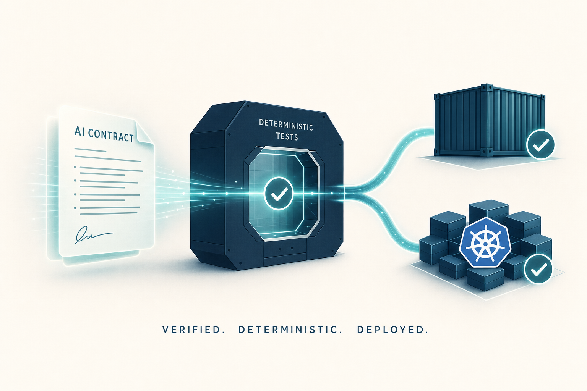

Templiqx implementation handoff
Plan: Pre-CRM3 readiness, mocks, Docker en Kubernetes
Bouw een bewijsbare, provider-neutrale readinesslaag waarmee dezelfde synthetische CRM3-interactie lokaal, via CLI, via MCP, in Docker en in Kubernetes exact dezelfde semantische resultaten en fingerprints oplevert.

Doel en ideale toestand
CRM3 is nog in ontwikkeling, maar Templiqx kan nu al bijna alle integratierisico's reduceren: contractspecificatie, foutsemantiek, actor-neutraliteit, deployment, supply-chain en reproduceerbaarheid. De ideale toestand is een clean checkout waarin just verify, een Docker smoke test en een kind-gebaseerde Kubernetes Job dezelfde package-, interaction-, output- en documentfingerprints produceren.
Probleemkader
De huidige POC bewijst contractvalidatie, fixture-output, grounded evidence, V5 DOCX-pariteit en Rust/CLI/MCP-pariteit. Hij bewijst nog niet hoe foutscenario's zich gedragen, hoe een host retry- en approvalbeleid toepast, of dezelfde flow standhoudt onder containerrestricties. De huidige lokale documentrenderer schrijft bovendien binnen de package-root; dat botst met een geharde read-only package mount.
DeterministicFakeRuntimeaccepteert éénfixture_output, maar modelleert geen typed timeout, rate limit, provider failure of stream lifecycle.- De synthetische CRM3-package heeft twee happy-path evals; ambiguous, missing-term en invalid-output scenario's ontbreken.
- Actor- en approvalbeleid hoort bij de host, maar de grens is nog niet als consumer contract bewezen.
- Er zijn nog geen Dockerfile, Compose-profiel, Helm-chart, kind-smoke of image-security checks.
- MCP gebruikt stdio en is daardoor geen zelfstandig Kubernetes Service-endpoint.
Oplossingsrichting
Voeg een test-only scripted runtime en CRM3 scenario corpus toe, met een kleine host-conformance harness voor retries en proposal/approval. Verpak de bestaande binaries in een non-root multi-stage image. Gebruik Docker Compose voor lokale conformance en een Helm-chart voor een mock-gateway Deployment plus conformance Job. Houd alle Basenet-verantwoordelijkheden buiten de Templiqx core.
Systeem- en deploymentgrenzen
De mockroute bootst de toekomstige hostintegratie na zonder een productieprovider of CRM3-runtime in deze repository te trekken.
flowchart LR
subgraph TQX["Templiqx standalone"]
PKG["CRM3 synthetic package"] --> APP["Actor-neutral application service"]
APP --> PORT["RuntimeAdapter port"]
APP --> DOC["DOCX adapter"]
APP --> SURF["Rust / CLI / MCP stdio"]
end
subgraph TEST["Conformance-only adapters"]
PORT --> SCRIPT["Scripted in-process runtime"]
PORT --> HTTP["HTTP mock runtime adapter"]
HTTP --> GATE["Mock gateway Deployment"]
end
subgraph HOST["CRM3 host ownership"]
MODEL["ModelGateway + anonymizer"]
RET["Permission-filtered retrieval"]
PROP["Proposal / approval / audit"]
QUEUE["BullMQ / Valkey workers"]
STORE["Document storage"]
end
PORT -. future host adapter .-> MODEL
MODEL --> RET
MODEL --> PROP
PROP --> QUEUE
QUEUE --> STORE
Templiqx compileert en valideert één modelinteractie. De mockadapters bewijzen transport- en failure-contracten. CRM3 blijft eigenaar van identiteit, autorisatie, retrieval, workflow, audit en storage.
Approval- en retrygedrag
stateDiagram-v2
[*] --> Compiled
Compiled --> Executing
Executing --> Validated: schema-valid output
Executing --> Retryable: timeout or rate limit
Retryable --> Executing: host retry policy
Retryable --> Failed: attempts exhausted
Executing --> Failed: permanent provider error
Validated --> Proposed: host creates proposal
Proposed --> Rejected: human rejects or corrects
Proposed --> Approved: human approval event
Approved --> Committed: permission + idempotency pass
Committed --> [*]
Rejected --> [*]
Failed --> [*]
Templiqx valideert het modelresultaat; de host bepaalt retry, proposal, approval en commit. Een agent krijgt geen alternatieve commitroute.
Scope
In scope
- Scripted mockscenario's voor generate, aggregate stream events en typed failures.
- Vijf of meer synthetische CRM3-scenario's met grounded evidence en golden outputs.
- Een host-conformance test voor actor parity, proposal/approval, wrong-tenant en idempotency.
- Een backward-compatible lokale compositie naast een expliciete scripted compositie.
- Multi-stage OCI-images voor CLI, MCP-stdio en conformance/mock-gateway.
- Compose, Helm, kind smoke, SBOM, vulnerability scan en image digest verification.
- Scheiding tussen read-only packages en writable render workspace.
Buiten scope
- Een echte OpenAI, Anthropic, Gemini, Bedrock, Ollama of CRM3 ModelGateway-adapter.
- CRM3 retrieval-, queue-, identity-, audit- of document-storage-implementaties.
- Een productie-HTTP API voor Templiqx of remote MCP transport.
- Autonome agent commits of een Templiqx-eigen authorization model.
- Productieclaims op basis van synthetische fixtures.
- Een volledige V1/V2/V5 legacy runtime of arbitrary DOCX compatibility.
Requirements traceability
| ID | Bron | Dekking | Acceptatiesignaal |
|---|---|---|---|
| R1 — realistische mock-runtime | Gebruikersvraag; bestaande DeterministicFakeRuntime | Fase 1 | Elke failure class levert een stabiele code en exact verwachte receipt of fout. |
| R2 — BLI-61/BLI-62 corpus | CRM3 package en BLI-referenties | Fase 2 | Happy, ambiguous, missing en invalid scenario's hebben harde assertions en golden fingerprints. |
| R3 — agent/mens capability peers | Templiqx capability map; CRM3 ADR-0016 | Fase 3 | Rust/CLI/MCP envelopes zijn gelijk; direct agent commit wordt door de host-harness geweigerd. |
| R4 — Docker-ready | Gebruikersvraag | Fase 4 | Non-root image draait met read-only root filesystem en produceert dezelfde receipt. |
| R5 — Kubernetes-ready | Gebruikersvraag; BLI-5 platformrichting | Fase 5 | helm lint, helm template en kind Job slagen met restricted security context. |
| R6 — host-owned adapters | CRM3 ADR-0006, ADR-0007, ADR-0016 | Besluit D2 en Fase 3 | Dependency-check toont geen CRM3, BullMQ, OpenSearch of provider SDK in core crates. |
| R7 — leren van Vercel chatbot tests | Vercel chatbot commit c2f8235e | Fase 1, 4 en research notes | Typed provider mock, explicit test routing en failure artifacts zijn aanwezig; permissieve patterns zijn afwezig. |
Relevante bestanden
Bestaande Templiqx-bronnen
- existing
crates/templiqx-ports/src/lib.rs— huidigeRuntimeAdapter, package en renderer seams. - existing
crates/templiqx-local/src/lib.rs— lokale store enDeterministicFakeRuntime. - existing
crates/templiqx-conformance/tests/crm3.rs— grounded extraction, drafting, DOCX en surface parity. - existing
crates/templiqx-mcp/tests/stdio.rs— echte MCP-stdio subprocess proof. - existing
examples/crm3/— huidige package, evals, template en baseline. - existing
scripts/check-boundaries.sh— dependency enforcement. - existing
justfile— centrale verificatie-ingang.
Nieuwe implementatie-eenheden
- new
crates/templiqx-mock/— scripted runtime, scenario schema en deterministic event/failure engine. - new
tools/templiqx-mock-gateway/— conformance-only HTTP gateway met health endpoints; niet gelinkt vanuit core. - new
adapters/templiqx-runtime-http-mock/— test-only HTTP client adapter voor container/netwerkproof. - new
examples/crm3/scenarios/— requests, outputs, failures, stream events en golden receipts. - new
crates/templiqx-conformance/tests/crm3_failures.rs— schema, timeout, retry, provider error en determinism. - new
crates/templiqx-conformance/tests/crm3_actor_boundary.rs— lokale mock host policy; geen exported Templiqx auth API. - new
Dockerfile,.dockerignore,deploy/compose.yml— hardened images en lokale mockrun. - new
charts/templiqx/— mock-gateway Deployment en conformance Job zonder MCP Service. - new
scripts/docker-smoke.sh,scripts/kind-smoke.sh— fingerprint parity en cluster proof. - new
.github/workflows/ci.yml— Rust, image, Helm, kind, SBOM en scan gates. - new
docs/contracts/mock-scenarios-v1alpha1.md— versioned scenarioformat en fouttaxonomie. - new
docs/architecture/deployment.md— runtime modes, mounts, security en host ownership.
Externe evidence
- external Basenet host repo
docs/decisions/proposed/0006-durable-workflows-bullmq-no-temporal.md. - external Basenet host repo
docs/decisions/proposed/0007-retrieval-index-opensearch-hybrid.md. - external Basenet host repo
docs/decisions/proposed/0016-agent-mcp-write-boundary.md. - external Vercel chatbot tests, commit c2f8235e.
Kernbesluiten
D1 — Scripted scenarios, geen prompt-substring magie
Elk scenario heeft een stabiele id en expliciete sequence: output, typed failure of stream events. De adapter selecteert op scenario-id vanuit testconfig, niet door prompttekst te inspecteren.
Alternatieven: Vercels eenvoudige substring routing is handig voor UI-smokes, maar te impliciet voor juridische conformance. Randomized mocks zijn niet reproduceerbaar.
D2 — Host capabilities blijven buiten Templiqx core
RuntimeAdapter blijft de modelinteraction seam. Retrieval, queue, permission, audit, proposal en storage worden alleen beschreven en getest als consumer contract in de CRM3 harness.
Alternatieven: zeven generieke ports aan Templiqx toevoegen zou de engine tot een CRM-platformkern maken en de opco-portability verlagen.
D3 — Retry wordt gesimuleerd, maar door de host bestuurd
Templiqx levert stabiele timeout/rate-limit/unavailable fouten. De mock host bewijst retry-after en attempt limits. De application service start zelf geen workflow of verborgen retryloop.
Alternatieven: retries in de engine dupliceren BullMQ/ModelGateway-beleid en maken receipts minder transparant.
D4 — Read-only packages, aparte writable workspace
Containers mounten /packages read-only en /work writable. Runtime-artifacts behoren niet tot package identity. De lokale CLI behoudt backward compatibility via defaults, maar accepteert een expliciete workspace-root.
Alternatieven: de package-root writable maken is eenvoudig, maar verzwakt supply-chain integriteit en read-only Kubernetes hardening.
D5 — Kubernetes Job plus mock-gateway Deployment; geen nep-MCP Service
De chart deployt een test-only HTTP mock gateway voor network/failure proof en een Job die conformance uitvoert. MCP blijft stdio en wordt alleen door een host/sidecarproces gestart.
Alternatieven: stdio achter een Service zetten werkt semantisch niet; nu remote MCP/SSE ontwerpen zou transportbesluit en authscope vooruitlopen.
D6 — Fingerprint parity is de release gate
JSON wordt semantisch vergeleken; package- en artifactbytes worden exact gehasht. Lokale, Docker- en Kubernetes-runs moeten dezelfde verwachte receipt produceren, met uitsluitend expliciet genormaliseerde deploymentmetadata buiten de hash.
Alternatieven: alleen exit code of “non-empty output” is onvoldoende om drift te detecteren.
Afhankelijkheden en volgorde
- Bevries scenarioformat en fouttaxonomie vóórdat Docker- of Helm-config daarnaar verwijst.
- Bouw eerst de in-process scripted adapter; dit geeft snelle, hermetische contracttests.
- Breid daarna het CRM3-corpus en de actor-boundary harness uit; deze leveren de golden receipts.
- Splits package-input en workspace-output voordat read-only containerhardening wordt aangezet.
- Bouw OCI-image en Compose-smoke; pas na bewezen containerpariteit volgt Helm.
- Voeg de mock-gateway Deployment en kind Job toe; sluit af met CI, SBOM en scan.
- Verbind pas later de echte CRM3 ModelGateway-adapter aan dezelfde contract suite.
Implementatiefasen
Uitvoeringsregel: voer fasen en taken van boven naar beneden uit. Status: [] idle · [wip] bezig · [x] gereed · [f] mislukt.
[x] Fase 1: Scripted runtime contract
Maak failure- en eventgedrag expliciet zonder de productie-runtime of orchestration scope uit te breiden.
1.1 Scenario DTO en parser
[x]DefinieerMockScenario,MockStep,MockFailureenMockEventmetdeny_unknown_fields.[x]Versioneer het format alstempliqx.mock/v1alpha1.[x]Verbied negatieve delays, lege step sequences, dubbele event ids en finish-before-start.
1.2 Adapter en fouttaxonomie
[x]Implementeer een scripted in-process adapter met injected clock en zonder echte sleeps.[x]Modelleertimeout,rate_limited,unavailable,invalid_responseenpermanentals stabiele diagnostics.[x]HoudDeterministicFakeRuntimeals backward-compatible facade voor bestaandfixture_output.[x]Neem generate- en stream-lifecycle fixtures over als concept uit Vercel, maar aggregeer ze deterministisch binnen de bestaande sync-port.
1.3 Testing strategy
[x]cargo test -p templiqx-mock— schema, event ordering, failure mapping en deterministic clock.[x]cargo test -p templiqx-local— bestaande fixture-output blijft compatibel.[x]Herhaal elke scenario-run tweemaal en assert byte-identieke serialized receipts.
[x] Fase 2: Synthetic CRM3 corpus
Vergroot de huidige happy path naar een failure- en ambiguitymatrix die BLI-61 en BLI-62 vroeg kan stabiliseren.
2.1 Scenario-inventaris
[x]Voegintake-document-01toe als nieuwe naam voor de huidige bewezen happy path zonder de bestaande eval te verwijderen.[x]Voegambiguous-datetoe met twee kandidaatdatums, confidence/risk flag en human-review expectation.[x]Voegmissing-notice-datetoe waarbij geen termijn wordt verzonnen.[x]Voeginvalid-output-schematoe dat schema-validatie hard laat falen en drafting blokkeert.[x]Voegdraft-with-citationstoe met meerdere fragments, UTF-8 offsets en quote hashes.
2.2 Golden receipts
[x]Leg per scenario request, expected output/failure, evidence, DOCX expectation en receipt vast.[x]Houd payloads uit receipts; alleen ids, versies, booleans, counts en fingerprints.[x]Laat drafting alleen starten na schema-valid extraction en grounded-evidence checks.
2.3 Testing strategy
[x]cargo test -p templiqx-conformance --test crm3_failures— alle scenario's eindigen in de exact verwachte status.[x]cargo test -p templiqx-conformance --test crm3— bestaande 2-interaction DOCX-flow blijft groen.[x]Mutatietest: wijzig één source byte en bewijs dat evidence- of packagefingerprint verandert.
[x] Fase 3: CRM3 host-boundary conformance
Bewijs agent/human parity en ADR-0016 zonder authorization of workflow aan de engine toe te voegen.
3.1 Lokale mock host
[x]Definieer test-local actor context met tenant, actor id, actor kind en permission claims.[x]Laat human en agent dezelfde Templiqx application call uitvoeren en vergelijk envelopes.[x]Modelleer proposal records met input fingerprint, evidence refs, idempotency key en lifecycle status.[x]Weiger direct agent commit; laat approved commit alleen via mock host policy lopen.
3.2 Retry en isolation
[x]Bewijs rate-limit retry-after en max-attempt gedrag in de host-harness.[x]Bewijs dat permanent failures niet retried worden.[x]Voeg wrong-tenant en split-access scenarios toe die vóór modeluitvoering worden geweigerd.[x]Bewijs dat dubbele approval/commit met dezelfde idempotency key één side effect oplevert.
3.3 Testing strategy
[x]cargo test -p templiqx-conformance --test crm3_actor_boundary— ADR-0016 consumer contract.[x]./scripts/check-boundaries.sh— geen host- of CRM3-import in core/runtime/MCP.[x]Assert dat een rejected proposal geen document, queue-item of audit-commitfixture maakt.
[x] Fase 4: Docker en Compose
Maak een herhaalbare OCI-build en draai dezelfde conformance onder restricted containerinstellingen.
4.1 Image layout
[x]Bouw binaries in een pinned Rust builder stage en kopieer alleen CLI, MCP en conformance/mock-gateway naar runtime stages.[x]Gebruik numeric non-root UID/GID, geen shell in de minimale runtime indien debugbaarheid niet vereist is, en een read-only root filesystem.[x]Mount/packages:roen/work:rw; wijzig document-output routing backward-compatible.[wip]Voeg OCI labels, pinned base-image digest en build provenance toe. Labels en digest zijn aanwezig; SLSA/build-provenance-attestatie blijft deferred.
4.2 Compose mock profile
[x]Start een mock-gateway met explicieteTEMPLIQX_MOCK_SCENARIO_ROOT.[x]Laat een one-shot conformance service wachten op gateway readiness en daarna exit 0/2.[x]Verzamel receipt en rendered artifact in een named work volume.[x]Voeg timeout en gateway-unavailable Compose-smokes toe zonder sleeps in testcode.
4.3 Testing strategy
[x]docker build --target templiqx-cli -t templiqx:dev .— reproduceerbare CLI-image.[x]docker compose -f deploy/compose.yml --profile mock up --abort-on-container-exit --exit-code-from conformance— volledige mockflow.[x]./scripts/docker-smoke.sh— non-root, read-only, mounts en fingerprint parity.
[x] Fase 5: Helm en Kubernetes
Bewijs de operationele shape in kind zonder een productie-remote-MCP contract te verzinnen.
5.1 Chart resources
[x]Maak een optionele mock-gateway Deployment en ClusterIP Service met live/readiness endpoints.[x]Maak een conformance Job met package ConfigMap/image fixture en writableemptyDir.[x]Voeg restrictedsecurityContext, dropped capabilities, seccomp, resource requests/limits en read-only root filesystem toe.[x]Voeg default-deny NetworkPolicy toe die alleen Job→mock-gateway verkeer toestaat.[x]Laat Secrets uitsluitend als refs configureren; de mockrun heeft geen secrets nodig.
5.2 Cluster proof
[x]Laad de lokaal gebouwde image in kind, installeer de chart en wacht op Job completion.[x]Lees de receipt uit Job logs of artifact volume en vergelijk met de lokale golden receipt.[x]Verwijder de mock gateway tijdens een failure test en bewijs een expliciete retry-exhausted status.[x]Assert dat de chart geen MCP Service of ongeauthenticeerde algemene HTTP application API exposeert.
5.3 Testing strategy
[x]helm lint charts/templiqx— chart structuur en values.[x]helm template templiqx charts/templiqx -f charts/templiqx/values-mock.yaml— renderbare manifests.[x]./scripts/kind-smoke.sh— echte clusterinstallatie, readiness en golden parity.
[wip] Fase 6: CI, supply chain en handoff
Maak de readiness proof verplicht en overdraagbaar aan CRM3 en andere opco's.
6.1 CI gates
[x]Draai Rust verification, Docker build/smoke, Helm lint/template en kind smoke als afzonderlijke jobs.[x]Genereer CycloneDX/SPDX SBOM en scan de finale image op high/critical vulnerabilities.[x]Upload receipts, Helm-render en failure logs altijd bij mislukking; upload geen prompts of klantpayloads.[x]Fail CI op focused/ignored tests en op golden updates zonder expliciete review marker.
6.2 Opco handoff
[x]Documenteer hoe een host zijn ModelGateway adapter tegen dezelfde scenarios test.[x]Publiceer de ownership matrix: engine, mock, host en deployment.[x]Leg exact vast welke synthetische proof later door echte CRM3-fixtures moet worden vervangen.[]Selecteer na CRM3 één tweede opco-package als portability gate. Expliciet post-CRM3.
6.3 Testing strategy
[x]just verify— volledige lokale workspace.[x]just verify-deploy— image, Compose, Helm en kind.[]Fresh-clone run met lege Cargo/Docker cache — reproduceerbaarheid en ontbrekende lokale dependencies. Deferred; CI fresh no-cache build dekt image-repro gedeeltelijk.
Globale validation commands
[x]cargo fmt --all -- --check— formatting.[x]cargo clippy --workspace --all-targets --all-features -- -D warnings— strict lint.[x]cargo test --workspace --all-features— unit, integration, MCP en conformance.[x]./scripts/check-boundaries.sh— standalone dependencyrichting.[x]./scripts/docker-smoke.sh— hardened container parity.[x]helm lint charts/templiqx— chart quality.[x]./scripts/kind-smoke.sh— Kubernetes proof.[x]just verifyenjust verify-deploy— handoff entrypoints.
Concrete testscenario's
| Scenario | Risico | Testlocatie | Verwacht resultaat |
|---|---|---|---|
| Happy extraction→draft→DOCX | End-to-end regressie | crates/templiqx-conformance/tests/crm3.rs | Schema-valid, grounded, OOXML equal en payload-free receipt. |
| Ambiguous date | Hallucinatie/overconfidence | crm3_failures.rs | Review-required uitkomst; geen silent date choice. |
| Missing term | Verzonnen termijn | crm3_failures.rs | Expliciet absent/unknown volgens schema; drafting houdt placeholder of blokkeert. |
| Invalid structured output | Schema bypass | crm3_failures.rs | output_schema_valid=false; drafting en rendering worden niet aangeroepen. |
| Rate limited twice, then success | Retry semantics | crm3_actor_boundary.rs | Host respecteert retry-after; exact drie attempts; één final receipt. |
| Permanent provider failure | Retry storm | crm3_actor_boundary.rs | Geen retry; stabiele failure code; geen proposal. |
| Agent direct commit | ADR-0016 bypass | crm3_actor_boundary.rs | Denied; alleen approved proposal commit. |
| Wrong tenant retrieval context | Data leakage | crm3_actor_boundary.rs | Rejected vóór runtime invocation; attempt count blijft nul. |
| Duplicate approved proposal | Dubbel side effect | crm3_actor_boundary.rs | Zelfde idempotency key levert één commit. |
| Read-only package mount | Container mutation | scripts/docker-smoke.sh | Packagebytes blijven gelijk; artifact landt in /work. |
| Mock gateway unavailable | Kubernetes/network failure | scripts/kind-smoke.sh | Job eindigt gecontroleerd met retry-exhausted diagnostic en geen hang. |
| Cross-surface parity | Agent/human API drift | crm3.rs plus deployment scripts | Rust, CLI, MCP, Docker en Kubernetes semantisch identieke envelopes/receipts. |
Wat we leren van Vercels chatbot tests
Onderzocht tegen commit c2f8235e1f3ea903ad8b7f61447c4f74164b5c58. De referentie is waardevol als test-ergonomie, niet als contractniveau voor juridische software.
| Vercel pattern | Templiqx toepassing | Besluit |
|---|---|---|
| Test-environment routeert naar een mock provider | Expliciete composition root kiest scripted adapter; production mode kan niet per ongeluk via prompt/env naar mock vallen. | Adopteren, strenger configureren. |
MockLanguageModelV3 met generate en stream chunks | Typed MockStep/MockEvent met start, delta, end, finish, usage en reasoning lifecycle. | Adopteren als scenario-idee. |
| Initial delay en chunk delay | Injected clock en virtual timing; geen wall-clock sleeps in core tests. | Aanpassen voor determinisme. |
| Playwright fixture en ChatPage helper | Gedeelde ConformanceHarness voor Rust/CLI/MCP/container calls en actor contexts. | Adopteren als test-API pattern. |
| Route intercept voor HTTP 500 | Scripted provider failure plus mock-gateway network failure; assert exact diagnostic. | Adopteren. |
/ping readiness en retained failure traces | /health/live//health/ready op mock gateway; receipts/logs als CI artifacts zonder payload. | Adopteren. |
| Prompt-substring response selection | Scenario-id en manifestselectie; promptinhoud bepaalt nooit testgedrag. | Niet overnemen. |
| Conditionele assertion wanneer suggestions bestaan | Fixture precondition moet hard falen als verwacht element/scenario ontbreekt. | Niet overnemen. |
| Stop-button timeout wordt opgevangen | Geen swallowed failures; elke expected timeout is typed en asserted. | Niet overnemen. |
| “response has some text” | Schema, evidence offsets, hashes, finish reason, usage en receipt fingerprint controleren. | Vervangen door semantische proof. |
Risico's en aannames
De scripted mock kan een echte provider te netjes voorstellen
Maak failure sequences expliciet en voeg later contracttests toe tegen de echte CRM3 ModelGateway. Synthetische conformance is een readiness gate, geen productievalidatie.
Een sync RuntimeAdapter begrenst echte streaming
Modelleer nu typed events in de mock en aggregeer ze. Bevries geen production streaming port voordat een echte hostadapter en backpressurebehoefte zijn onderzocht.
Read-only package/workspace split raakt backward compatibility
Behoud de bestaande local composition defaults en voeg de workspace als optionele configuratie toe. Voeg CLI snapshottests toe voor oude invocations.
Mock HTTP gateway kan als productieadapter worden misbruikt
Naam, crate feature, image label en docs markeren hem als conformance-only. Geen credentials, provider endpoints of algemene passthrough ondersteunen.
Helm voor een library kan onnodige productvorm suggereren
De chart is een runner/mock proof, niet “Templiqx server”. Productiehosts kunnen de Rust library of CLI sidecar gebruiken zonder chart.
CRM3 ADRs en Linear-status kunnen veranderen
Deze planversie is gegrond op de lokale ADRs van 11 juli 2026. Refresh BLI-5, BLI-59, BLI-60, BLI-61 en BLI-62 vóór de echte hostadapter wordt gebouwd.
Image reproducibility kan botsen met native DOCX dependencies
De huidige Rust adapter is pure librarycode; pin alle base images en controleer een fresh-cache build op amd64 en arm64 voordat multi-arch publicatie wordt geclaimd.
Ownership matrix en handoff
| Capability | Templiqx | Mock/conformance | CRM3/opco host |
|---|---|---|---|
| Contract parse/validate/compile | Owner | Fixtures | Consumer |
| Model execution | RuntimeAdapter port | Scripted + HTTP mock | ModelGateway adapter + anonymizer |
| Grounded evidence schema | Validatie | Golden offsets/hashes | Retrieval en source authorization |
| Proposal/approval/audit | Geen ownership | Consumer-contract harness | Owner volgens ADR-0016 |
| Retry/workflow | Typed failures | Scripted attempts | ModelGateway/BullMQ volgens ADR-0006 |
| Document rendering | Port + V5 adapter | DOCX baseline | Storage, permissions en lifecycle |
| Kubernetes runtime | OCI runner artifacts | Chart/Job/mock gateway | Host chart or sidecar integration |
just verify en CI. Resterende gaps: build-provenance-attestatie, fresh-clone gate, tweede opco-package (post-CRM3), optionele aparte MCP-image stage, en echte CRM3 ModelGateway-adapter (host repo). Eerstvolgende actie: host-side ModelGateway consumer-contract tegen dezelfde scenario-suite.Plan gereed voor: CRM3 host-adapter handoff. Na hostintegratie vervang synthetische fixtures door gesaniteerde CRM3-data en voeg daarna een tweede Blinqx-opco toe als portability gate.
Amendments
2026-07-12 — Pre-CRM3 readiness closeout (~95%). Alle zes fasen zijn geïmplementeerd of expliciet deferred. Checkliststatus in dit document: 76× [x], 2× [wip] (build provenance, Fase 6 tot fresh-clone/post-CRM3 items klaar zijn), 2× [] (tweede opco-package, fresh-clone gate). Nieuwe gaps gesloten in deze ronde: Compose failure profiles (mock-failure-unavailable, mock-failure-timeout), kind gateway-down retry-exhausted job, split-access host-boundary test, CI gates voor #[ignore] en golden review (scripts/check-ci-gates.sh). Deferred zonder regressie: SLSA/build-provenance, aparte MCP-image stage (optioneel), tweede opco-package, fresh-clone zonder cache, echte ModelGateway-adapter in Basenet host.